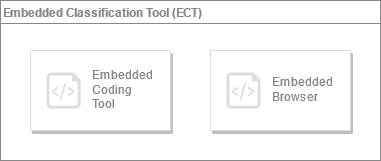

Embedded Classification Tool (ECT)
This document refers to the ECT version 1.4. Please check the documentation for the latest version
What's new in version 1.4
The Embedded Coding Tool evolves and changes its name in Embedded Classification Tool.
This upgrade introduces:
- The new Embedded Browser (as a standalone ICD-11 browser)
- New features for the Embedded Coding Tool (such as the popup mode)
Upgrade to version 1.4 is safe. There are no breaking changes moving from old versions (1.1, 1.2 or 1.3) to this version.
We highly recommend upgrading your current ECT because version 1.4 also includes some bug fixes.
Overview
ICD-11 Coding Tool and ICD-11 Browser are web based softwares that helps users search, find and browse ICD-11 categories that they are looking for.
The Embedded Classification Tool (ECT) allows integration of a complete ICD-11 Coding Tool and/or ICD-11 Browser into any web application.

structure of the ECT library
The Embedded Classification Tool (ECT) is written in Javascript for the complete compatibility with any web application and provides an easy way to give all the ICD-11 functionalities to your web applications.
Under the hood, it is powered by the ICD-API
Integrating the Embedded Classification Tool (ECT) is very easy. All you need to do is adding references to the provided javascript and css files and making minor modifications on your web page.
Installation
Embedded Classification Tool (ECT) can be installed via npm or manually loaded from our CDN.
npm
Install the module via npm:
npm install @whoicd/icd11ect
After the installation, import the package and the stylesheet file:
import * as ECT from '@whoicd/icd11ect';
import '@whoicd/icd11ect/style.css';
CDN
Include the stylesheet file icd11ect-1.4.1.css in the <head> section of your page.
<head>
<link rel="stylesheet" href="https://icdcdn.who.int/embeddedct/icd11ect-1.4.1.css">
</head>
Include the JavaScript file icd11ect-1.4.1.js before the closing </body> tag.
<script src="https://icdcdn.who.int/embeddedct/icd11ect-1.4.1.js"></script>
Documentation
The documentation offers a few ways to learn about the Embedded Classification Tool (ECT) library:
- Refer to the specific documentation of the Embedded Coding Tool.
- Refer to the specific documentation of the Embedded Browser.
- Finally, read the Advanced settings documentation to learn more about it.